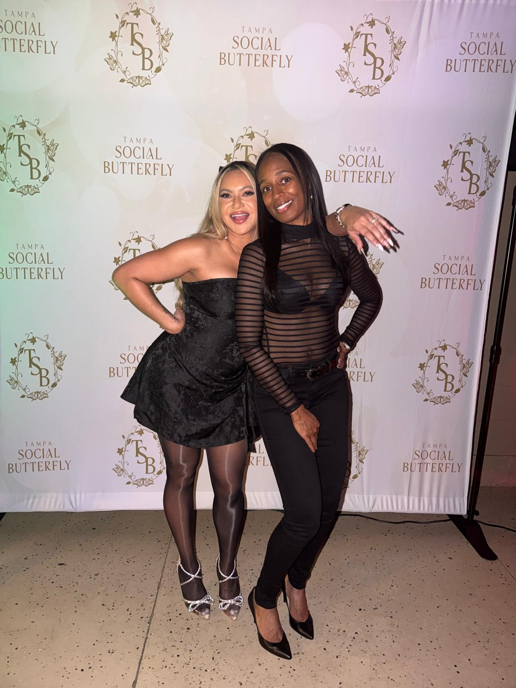
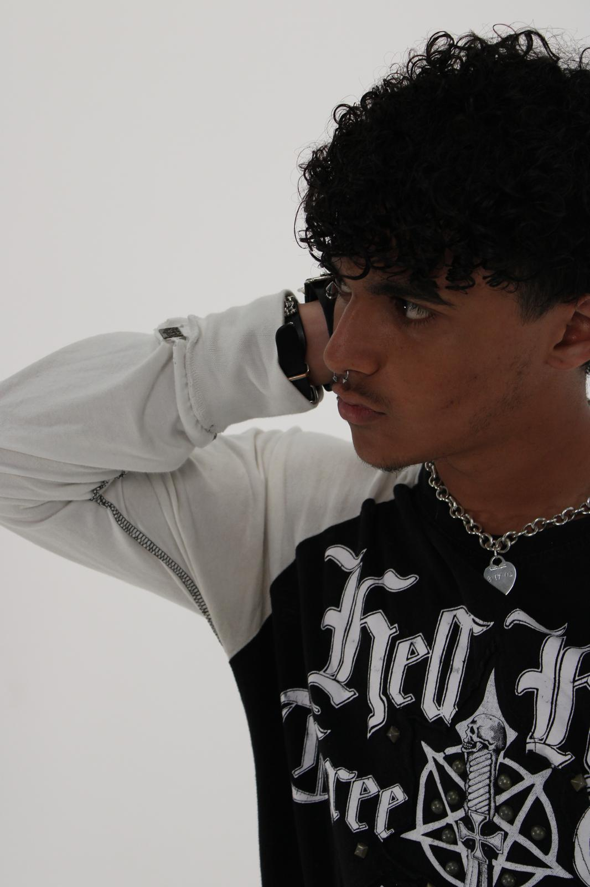

Connecting people. Building community. Creating moments.
Whether you're celebrating a milestone, attending a networking night, or growing a brand through content, Tampa Social Butterfly exists to make the moment mean more — and last longer than the night itself.

Born social
Tampa Social Butterfly started with a simple observation: the best part of any event lives in the in-between moments — and most of them never get captured.
So we built a company around catching them. We cover weddings, birthdays, bachelorettes, and holiday celebrations with a behind-the-scenes lens, and we host our own community events that bring Tampa's people and businesses into the same room. Every connection has the power to spark an opportunity, a friendship, or a memory worth keeping.
We believe your celebration deserves to be relived the next morning — not weeks later when the formal edit arrives. That's why everything we capture is shared with you within 24 hours.
A mission you can feel in the room
Create welcoming spaces where people connect, businesses thrive, and communities grow together.
Authentic connections
No stiff posing, no forced smiles. We film people being themselves, because that's the version their friends actually want to see. The best clip of the night is almost never the planned one.
Creative experiences
Every event gets its own visual treatment — paced, colored, and cut to match the energy in the room.
Local community focus
We're Tampa people. Our own event series puts local founders, creators, and neighbors in the same room.
A partner network that shows up
Need more than coverage? We work with a curated network of premier photo studios, photographers, and videographers across Tampa Bay — so one conversation gets your whole content team booked.
We're not your planner. We're not your photographer. We're the third thing.
Planners run the day. Photographers deliver the album. We cover the layer nobody else is watching: the candid, vertical, social-first record of how the day actually felt — and we hand it to you while it still matters.
- We work alongside your existing vendors, never in their way
- Vertical-first filming, edited for Reels, Stories, and the grid
- Delivered electronically within 24 hours
- One point of contact for shoots through our partner network

See what we captured last weekend
Fresh reels, event recaps, and behind-the-scenes moments — posted as they happen.